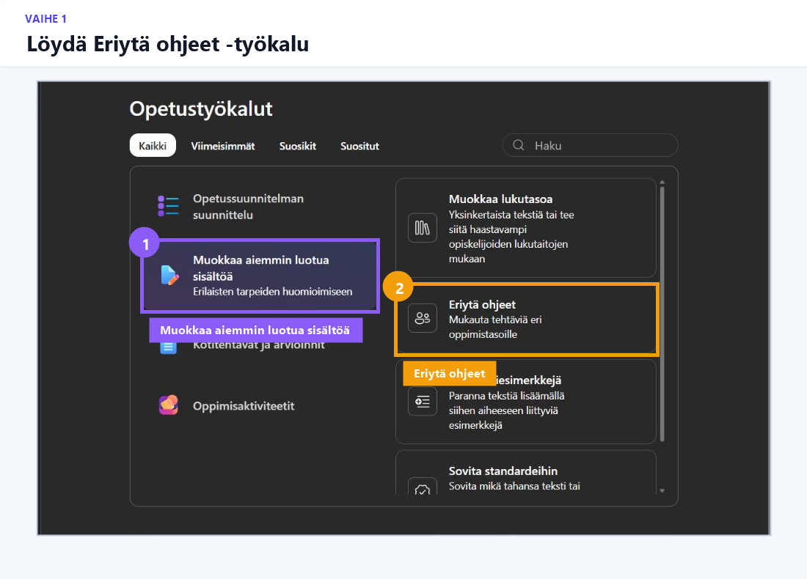
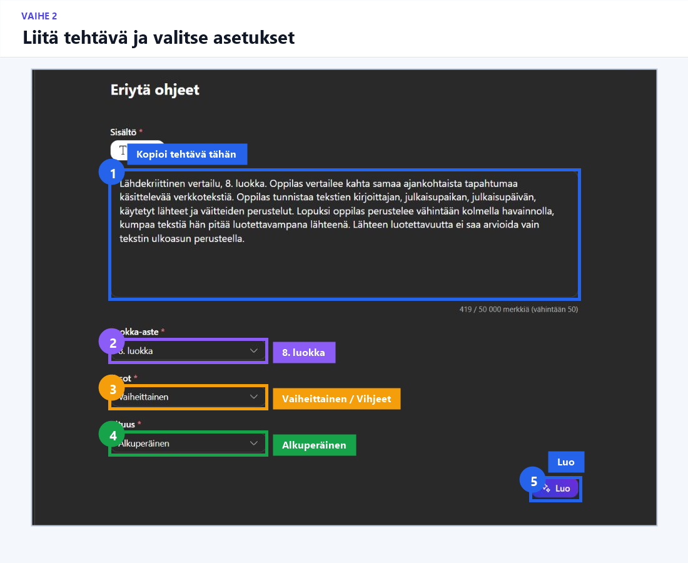
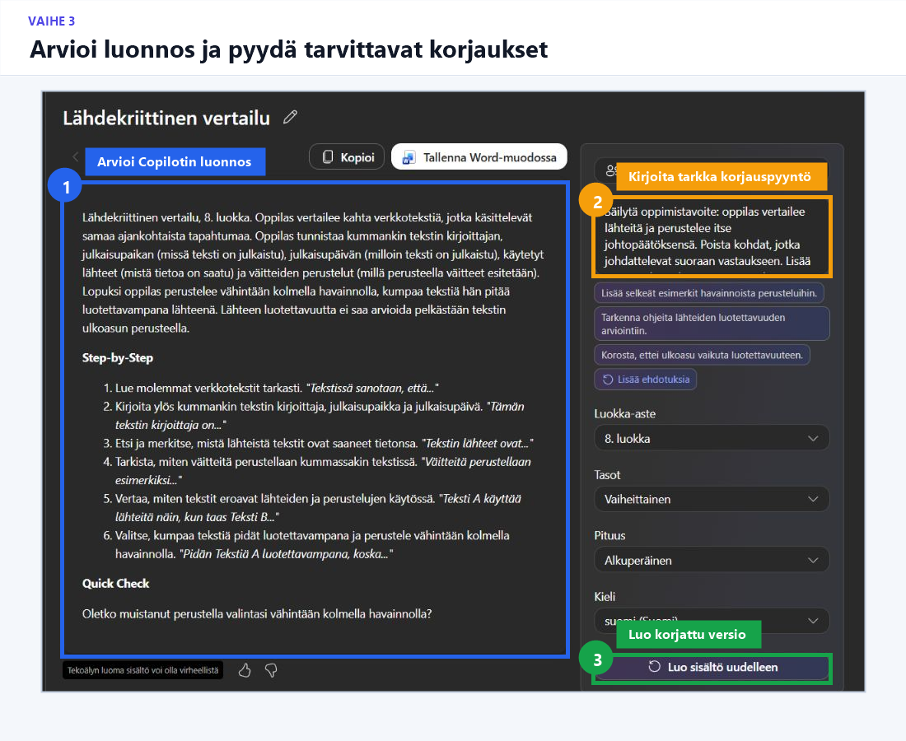

Harjoitus 1 · Pareittain · 15 min
Eriytä tehtävän ohjeita
Tavoite
Opit tuottamaan samasta tehtävästä erilaisia tuettuja ohjeita ja arvioimaan, säilyykö alkuperäinen oppimistavoite.
VAIHE 1/6
Avaa työkalu
Valitse Microsoft 365 Copilotissa:
Opeta → Muokkaa aiemmin luotua sisältöä → Eriytä ohjeet

VAIHE 2/6
Kopioi tehtävä
Lähdekriittinen vertailu, 8. luokka. Oppilas vertailee kahta samaa ajankohtaista tapahtumaa käsittelevää verkkotekstiä. Oppilas tunnistaa tekstien kirjoittajan, julkaisupaikan, julkaisupäivän, käytetyt lähteet ja väitteiden perustelut. Lopuksi oppilas perustelee vähintään kolmella havainnolla, kumpaa tekstiä hän pitää luotettavampana lähteenä. Lähteen luotettavuutta ei saa arvioida vain tekstin ulkoasun perusteella.
VAIHE 3/6
Luo kaksi erilaista versiota
Valitkaa molemmat:
- Luokka-aste: 8. luokka
- Pituus: Alkuperäinen
Jakakaa roolit:
Henkilö A
Tasot → Vaiheittainen
Henkilö B
Tasot → Vihjeet
Valitkaa lopuksi Luo.

VAIHE 4/6
Verratkaa tuloksia
Pohtikaa:
- Säilyikö alkuperäinen oppimistavoite?
- Tukeeko versio oppilaan työskentelyä vai tekeekö se liikaa hänen puolestaan?
- Mitä opettajan pitää tarkistaa tai muuttaa?
VAIHE 5/6
Parantelkaa parempaa versiota
Kopioikaa muokkauskenttään:
Säilytä oppimistavoite: oppilas vertailee lähteitä ja perustelee itse johtopäätöksensä. Poista kohdat, jotka johdattelevat suoraan vastaukseen. Lisää vain työskentelyä jäsentäviä vaiheita ja oppilaan ajattelua ohjaavia kysymyksiä. Älä lisää tehtävään uusia arvioitavia asioita.

VAIHE 6/6
Valmistautukaa kertomaan
- yksi käyttökelpoinen asia
- yksi tekemänne muutos
- yksi vielä tarkistettava asia.
Ydinhavainto
Eriyttäminen ei tarkoita oppimistavoitteen helpottamista.